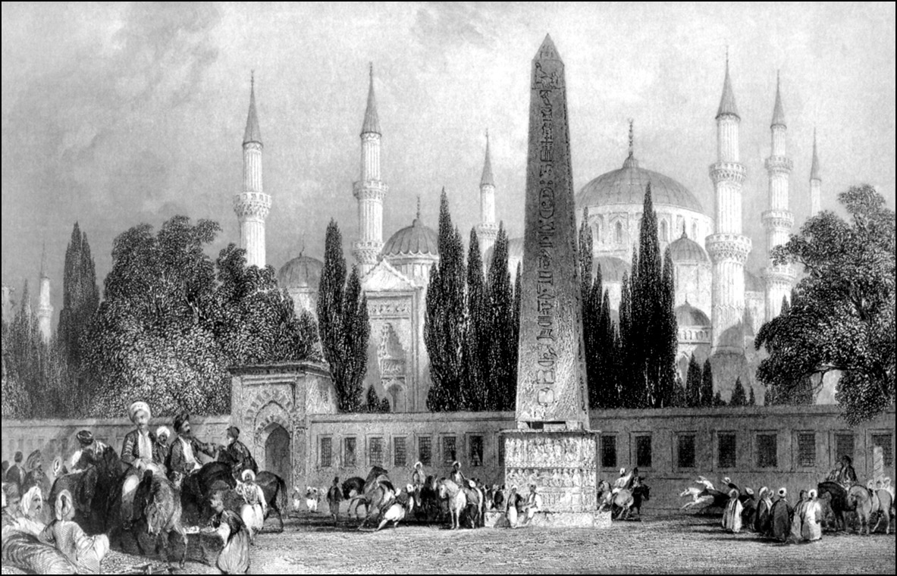

II. VİYANA KUŞATMASI VE SONUÇLARI
II. Viyana Kuşatması, yani 1683 Kuşatması gerçekten bizim tarihimizin önemli bir noktasıdır. Hiç şüphesiz ki muharebeler dizisi yaptığımız Avusturya için de aynı öneme sahiptir. Burada bir terim hatası üzerinde duralım. Bizim ders kitaplarımızda hep Avusturya diye yazılır. Hiç kuşkusuz ki Avusturya coğrafya olarak ve o coğrafyanın içindeki kavim olarak doğruyu ifade etmektedir, çünkü bugünkü Avusturyalılar tarafından da o şekilde benimsenmektedir. Ama aslında bu devletçiğin o zamanki adı Alman İmparatorluğu’dur. Çünkü Avusturya, Alman İmparatorluğu dediğimiz konfederasyonun üyelerinden birisiydi. Fakat işin garibi, bu birliğe giren Avusturya’nın Bohemya ve Macaristan toprakları bunun hep dışında kalmıştır.
İlk önce Türklerin fethi dolayısıyla dışarıda kalan bu arazi, 1686’da bizim elimizden alındıktan sonra da o tarafa dâhil olmamıştır. Bohemya dediğimiz bugünkü Çekoslovakya toprakları için de aynı şey geçerlidir. Çünkü bugünkü Çek Cumhuriyeti’nin toprakları da o zamanki Avusturya’ya dâhildi. Slovakya ise Macar parçası itibariyle Avusturya’ya bağlıydı. Bu birleşik bir devlettir ve bu birleşmede, savaşlardan çok evlilikler rol oynamıştır. Karşımızdaki Katolik bir birlikti ve 16. yüzyılda bir ara bu evlilikler dolayısıyla bir dünya imparatorluğu mertebesine çıkmıştı. Fakat merkeziyetçi bir yapısı olmadığı için aynı derecede siyasi ağırlığı yoktu bu imparatorluğun, oluştuğu gibi kolayca da dağılıyordu. Mesela Avusturya’da Habsburg hanedanından Maximilian, Bourgogne [Burgonya] hanedanının kızı Marie ile evlenmiştir. O zaman Burgonya bugünkü Fransa’nın Dijon ve çevresi, Belçika ve Flandre dediğimiz bölge, yani Hollanda ve Belçika’nın bir kısmını kapsıyordu. Zengin bir devletti. Dokuma ticareti ve sanayiiyle çok zenginleşmişti. Burgonya hanedanında başka evlat olmadığı için, bu evlilik dolayısıyla devlet büyümüştü. Derken buradan doğan çocuk [Güzel Philippe/Felipe] Aragon kralı ile Kastilya kraliçesinin kızı olan Juana ile evlendi, oradan da İspanya veraseti ve bütün o adalar, Amerika kıtasında keşfedilen yerler buraya dahil oldu. O yetmezmiş gibi bu evlilikten doğan iki çocuktan biri olan Karl [Şarlkent], Alman imparatoru seçildi. Bir müddet sonra bu işten vazgeçti. O unvanı kardeşi Ferdinand’a bıraktı ve aynı zamanda da bizim Avusturya dediğimiz sahayı Bohemya’yı ona terk etti. Zaman içerisinde de Habsburglar İspanya’dan çekildiler. Soyları tükendiği için burası Fransa hanedanı olan Bourbonların eline geçti. Ülkeler evliliklerle alınıyor. Hatta Avusturya için meşhur bir laf vardır: “Bırak savaşı başkaları yapsınlar, sen evlen ey mesut Avusturya” (Bella gerant alieni, tu felix Austria nube!) derler.
Bu gibi evliliklerle kurulan devletçiklerde gene hanedanın tükenmesi ve başka türlü olaylarla başka türlü siyasî kombinasyonlara geçilir. Bu bizim devletimizin, imparatorluğumuzun oluşumundan çok farklı bir süreç. I. Viyana Kuşatması 1529 tarihinde, Kanunî Sultan Süleyman devrinde yapılmış, ama zaman uygun olmadığı için [kış yaklaşıyordu] kuşatma kaldırılarak avdet edilmiştir. Bundan aşağı yukarı 150 sene sonra, 1683’te, bu kez padişah değil, Köprülüler ailesinden Damat Merzifonlu Kara Mustafa Paşa büyük bir ordunun başında bu kuşatmayı tekrardan gerçekleştiriyor. Şunu ifade etmek gerekir: Merzifonlu Mustafa Paşa’nın belirli meziyetleri olmasına rağmen, böyle bir orduyu yönetecek ve büyük bir seferi zafere ulaştıracak yetenekte bir mareşal değildir. Yani Türk tarihinde sayısı az olmayan büyük mareşaller içinde yer alabilecek bir tarihî portre değildir.
Nitekim olayın sonunu anlatmaya lüzum yok. Stratejik hatalar yapılmıştır. Bunlardan en önemlisi Viyana’nın etrafındaki kalelere ilişkindir. Viyana şehrine tepeden bakan bir kale olan Kahlenberg vezirlerin tüm tembihlerine, nasihat ve tavsiyelerine rağmen alınmamış ve ordumuzu arkadan vuran güç, yani Jan Sobieski komutasındaki Lehistan ordusu burada, Tuna’nın yan kolunun karşı yakasında mevzilenmiş ve kuşatma ordusunu sıkıştırmış. Ve felaketle biten o kuşatmanın ardından, felaketler yıllarca peş peşe sürmüştür: 1685’te Uyvar, 1686’da Budin düşmüş, yani bugünkü Macaristan kaybedilmiştir. Osmanlı ordusu 1687’de Mohaç’ta da bozguna uğradıktan sonra Macarların yaşadığı topraklardan sadece Temaşvar elimizde kalmıştır. O da 1718’de Pasarofça Antlaşması’yla elimizden çıkacaktır. 1699’da Osmanlı Devleti karşısında Hıristiyan devletler koalisyonuyla ilk muahedeye oturmuştur. Bu modern anlamda bir muahedenamedir. Ve bu muahedename imzalandığı zaman bilhassa Reisülküttab’lık servisinde çalışanların tecrübeli diplomatlar olduğu anlaşılmıştır. O zamanki Reisülküttab Rami Mehmed Efendi sonradan paşa ve sadrazam olacaktır. Bu bizde dışişleri ekolünün devletin içinde bir nevi yer etmeye başlamasıyla eşanlamlı bir olaydır. Bir konunun üzerinde ısrarla durmakta fayda görüyorum: Karlofça Antlaşması ile biz ilk defa devletlerarası hukuk anlayışına ve Roma hukuku prensiplerine dayanan yeni bir hukukî sistemle muahede yapmışızdır. Bundan sonra artık başkentlerdeki büyükelçilik heyetlerinin nasıl çalışacakları, ne gibi vergileri ödeyecekleri veya ödemeyecekleri, ne gibi muafiyetleri, dokunulmazlıkları olacağı bile buna göre tespit edilecektir. Bu çok önemli bir safhadır.
Asıl önemlisi, artık Orta Avrupa’nın manzarası değişmektedir. Vâkıâ, Venedik zamanında bize kaybettiği birtakım yerleri 1699’da geri almıştır, ama bunları bir müddet sonra elinden çıkaracaktır. Rönesans döneminin büyük devleti, Akdeniz’in ve Adriyatik’in kraliçesi olan, San Marco Cumhuriyeti de denen, o muhteşem medeniyetin sahibi Venedik Cumhuriyeti’nin ikbalini kaybetmekte olduğu artık bellidir.
Nitekim Devlet-i Âliyye, Venedik’e kaybettiği yerlerin üzerinde eskiye dönüşü kısa zamanda sağlamıştır. Henüz yeterince kuvvetli bir devlet olmayan Rusya’ya Karadeniz’de verdiğimiz yerleri de 1711 Prut Antlaşması’yla geri almışızdır. Fakat Avusturya böyle değildir. O vakte kadar iktisadî ve askerî yönden bir varlık sayılamayacak Alman-Avusturya İmparatorluğu bundan sonra Devlet-i Âliyye için büyük bir tehdit oluşturacaktır. Bir kere iktisaden gelişmeye başlamaktadır.
O tarihe kadar kurulan doğu ticaret kumpanyaları iflas eden Avusturya bundan sonra başarılı bir ticaret güdüyor. Tuna mansabında ticaret hacmi çok önemli ve bugünkü Bulgaristan’a kadar, yani bizim Tuna vilayetlerimize kadar uzanan bir alanda hammadde-mamul madde değişimine giriyor ve 20 sene sonra Adriyatik’e inerek orada hepimizin bildiği gibi Trieste limanını tesis ediyor ve Akdeniz ticaretine el atıyor. Bu çok ilginçtir.
Avusturya, porselen gibi, kumaş sanayii gibi yeni sanayi dalları geliştiriyor. Unutmayın ki Cumhuriyet devri şeker sanayii kurmakla ünlüdür. O vakte kadar biz toplum olarak iki kaynaktan, Avusturya ve Rusya’nın şekeriyle beslenirdik. Birinci Cihan Harbi’nde bunun çok sıkıntısını çektik. Bu dönemden sonra Avusturya’nın, bilhassa Macaristan topraklarını da ele geçirmesiyle, Orta Avrupa ve Akdeniz bölgesinde bize karşı bir açılımı başlıyor. Ordular, merkezî ordu safhasına geçmektedir. 18. asrın en önemli özelliği budur. Daha evvel Viyana Kuşatması’na kadar Osmanlı, merkezî orduya sahip tek devlettir. Fatih devrinde 18 bin kişi olduğu tahmin edilen, Kanunî devrinde 120 bin kişiyi bulan, kapıkulu ocaklarından, yani piyade olarak yeniçeriler, ayrıca atlı kuvvet olarak sipahilerden müteşekkil bir ordudur bu. Bunun yanı sıra topçular da vardır. Bu çok önemli. Osmanlı ordusu ateşli silahları kullanan bir ordudur. Cebecilerden oluşan kapıkulu ocaklarının nefer sayısı ve zabit sayısı artmaktadır. Viyana’yı kuşattığımız vakitte rakam 60 bini geçmektedir. Ayrıca sefer için devşirilen, yani tertip edilen eyalet askeri de, tımarlı sipahiler ve zaimler, yani zeamet sahipleri ikişer, üçer, beşer askerle gelmekteydiler. Ordudaki asker sayısı 100 bini aşabilmekte, hatta 120 bine ulaşmaktadır. Bunların iaşe ve ibatesi mükemmel düşünülmektedir. 17. asırda Osmanlı ordusu o bakımdan merkezî seferberlik kabiliyeti ve savaş gücü son derece yüksek bir ordudur.
Yeniçağın mücehhez mühendislik teknikleriyle ve ateşli silahların iyi kullanımıyla da kendini göstermektedir. Özellikle Girit cephesinde bu görülmektedir. Bunlar kılıç-kalkan oyununa benzeyen harpler değildir. Osmanlı orduları kesinlikle askerî mühendisliği ehliyetle kullanmaktadır. Bu çok önemli özellik 18. yüzyılda artık Türklerin tekelinden çıkıyor. Çünkü Avusturya ve Rusya da merkezî yerleşik ordulara sahip oluyorlar, yani kışla bu adamların da hayatına giriyor. Üniforma bu adamların hayatına giriyor ve bir müddet sonra biz de bu teşkilatlanmayı takip etmek zorunda kalıyoruz ve asıl önemlisi, diğer devletler askerî okullar kurmaya başlıyorlar. Bu askerî okullar, askerî mühendis, piyade ve topçu zabitleri yetiştiriyor. Bu yüzden biz de daha 18. yüzyılda kara ve deniz mühendishaneleri dediğimiz iki harp okulu [Mühendishane-i Berri-i Hümayun ve Mühendishane-i Bahri-i Hümayun] kurmak zorunda kalıyoruz ve yavaş yavaş askerî ihtiyaçlar dolayısıyla tababet ve baytarlık gibi branşlarda da okullar tesis ediliyor. Bu iki eski müessese, Türkiye’de bugün başarıya ulaşmıştır, çünkü arkalarında ananeleri vardır.
Demek ki bu dönemde Avusturya’nın ziraatta yeni bir üretim faaliyeti, Tuna mansabında yeni bir ticaret faaliyeti ve Akdeniz’de bir açılımı söz konusudur. Özellikle Toscana Dukalığı da Avusturya devletinin, yani o zamanki Alman İmparatorluğu’nun sınırlarına girmesi bunda rol oynamıştır. Avusturya artık müstakil ve başı çeken ünitedir. Çünkü Avusturya büyükdukaları olan Habsburglar evvelden beri hep Alman imparatoru seçiliyordu. Şimdi İtalyanların da becerisi eklenince, Avusturya Akdeniz’de teşkilatlanabilmektedir. O kadar ki Haleb’de, Latakya dedikleri Lazkiye’de, Hama ve Humus’ta bile, Avusturya tebaası olan İtalyan tüccar aileleri vardı. Bunlar hep burada kaldılar. Bu çok önemli bir gelişmedir.
Şimdi asıl önemlisi korsanlık ki, bu o zamanlar resmî bir deniz politikasıydı. Bizden korsanlığa karşı ahitnameler alıyorlar, anlaşmalar yapıyorlar. Dolayısıyla seyrüsefain emniyeti sağlanabiliyor. Bütün bu özellikler İkinci Cihan Savaşı’na kadar sürecek bir Akdeniz politikasının başlangıcıdır. Birinci değil İkinci diyorum, çünkü İkinci Cihan Savaşı’na kadar Akdeniz’in doğusundaki devletler bahrî politikalarında, yani deniz ticaretinde gerileme içine girmişlerdir. Ve bu ticaret İngiltere, Fransa, Hollanda, giderek Avusturya gibi devletlerin eline geçmiştir. İtalyan birliğinin kuruluşundan sonra yavaş yavaş Avusturya diskalifiye edilmektedir. Ama Batı veya Orta Avrupa hâkimiyeti diyeceğimiz bu gelişmeler İkinci Cihan Savaşı’na kadar uzanmaktadır. Ancak ondan sonradır ki durum değişmektedir. Ve biz bu günlerde bu değişimi yaşıyoruz; aslında çok önemli bir tarihî dönemin içerisindeyiz.
İlk anda II. Viyana Kuşatması’nın ardından Bosna-Hersek ve Tuna kıyısı ülkelerinde merkezî otorite boşluğu ortaya çıkmıştır. Harap kalelerin tamirinde eski merkeziyetçi politikalarının işe yaramadığı görülmüştür. Dolayısıyla burada Devlet-i Âliyye’nin kendisine yeni mekanizmalar yaratması gerekmektedir. Mesela Bosna’da artık şehirlerde mütesellim diye, yerli savaşçılardan, paşalardan seçilmiş sancak beyleri tayin edilmektedir. Bazı şehirlerde zengin tüccar ve âyan şehrin idaresinde büyük ölçüde söz sahibi olmuşlardır. Moskopol (Voskopoje) gibi yerlerde bir adem-i merkeziyetçi dönem başlamıştır. Eski sert merkeziyetçi politikanın dışına çıkılmıştır ve bu yüzden de dış ticaret çok rahat gelişmektedir. Memleketin içinde kıtlık, askerî nizamda sarsıntılar başlamaktadır. Osmanlı İmparatorluğu da bunları düzeltmek için ciddi anlamda reformlara girişmiştir. O yüzden 18. yüzyıl, özellikle de Lale Devri ve ta Tanzimat’a kadar giden dönem bizde çok az bilinen, ilmî tarihçiliğin az tetkik ettiği okul tarihçiliğinde de oldukça yanlış ve baştankara anlatılan, ama modern Türkiye’nin oluşumunda, devlet ve millet hayatımızda çok önem taşıyan bir devirdir.
Devşirme sistemi bitmiştir. Artık devlet hayatına Nevşehirli Damat İbrahim Paşa gibi, Ispartalı Halil Hamid Paşa gibi Anadolulu unsurların girmeye başladığını görüyorsunuz. Ordunun yapısı, asıl önemlisi kültür hayatımız değişmeye başlamaktadır. Adeta garip bir batılılaşma ve bunun yanı başında da göze çarpan bir Türkleşme, sanat, kültür ve edebiyat hayatımızda görülmektedir.
LALE DEVRİ
Lale Devri, 20. yüzyıl başının ünlü tarihçilerinden Ahmet Refik Bey’in, sonraki soyadıyla Altınay’ın, III. Ahmed devrini anlatan eserine verdiği bir isimdir. Tabii bu bazı yanılmalara da neden olabilir. Evvela şunu belirtelim, ne İstanbul ne de Türkiye laleyi 18. yüzyılda tanımıştır. Lale çok daha evvelki asırlarda Türklerin çok sevdiği, bahçelerinde yetiştirdiği ve Avrupa’ya da tanıttıkları bir çiçektir. O kadar ki Flaman bölgesinden, aslen Hollandalı olan, fakat başkenti Viyana olan Alman İmparatorluğu’nun sefiri olarak Kanunî Süleyman devrinde İstanbul’a ve Anadolu’ya kadar gelen Augier Ghislain de Busbecq’in tanıdığı, sevdiği ve memleketine götürdüğü bir çiçektir. Ve muhtemelen tulpen tulipen [dülbend lalesi] cinsten bir laleden mülhem bir adla “tulpe” olarak adlandırılmıştır.
Bizdeki Lale Devri çılgınlığını andıran çok daha çılgın bir devir, bizden önce Hollanda’da yaşanmıştır. Bu çiçek o kadar yayılmış, o kadar benimsenmiş, o kadar çok yetiştirilmiş, o kadar çok yeni cinsleri türetilmiş ve bu cinsler öylesine sevilmiştir ki –çünkü çok mistik bir çiçektir– bunlara büyük paralar ödenmeye başlanmış ve bu açık artırmalar sonunda insanlar bir nevi kumar histeryası içinde, servetlerini kaybetmişlerdir.
Hollanda’daki bu “Lale Devri”ne kıyasla, Türkiye’nin Lale Devri çok daha masum, çok daha dengeli, çok daha mütevazı kalır. Mistik bir çiçek olan “Lale”nin Arap harfleriyle yazılışında, Allah’ın adının yazılışına benzer bir taraf vardır. Bu yüzden de hattatlar lalenin sadece resmini değil, ismini de yazıya dökmeyi bir marifet addetmişlerdir ve öyledir de. Aslında bugün, yabani lalenin Altaylar’dan gelme bir çiçek olduğu ve tamamıyla Türklere mahsus, milli bir çiçek olarak gösterilebileceği anlaşılıyor. Her halükârda 16. ve 17. asırlarda sevilen ve bilinen lale, Türk motiflerine, Türk hat sanatına, Türk çini sanatına da soyut biçimleriyle aksetmiştir. Biz Türkler laleyi severiz. Çok insanlar, çok milletler sever, ama bizim hayatımızda yeri başkadır.
18. asırda lalenin resmedilişi de değişti, daha klasik biçimini aldı. Üsküdarlı Ruganî Ali Çelebi, fevkalade hoş lale motifleri ve resimleriyle tanınır. Bu devirde bir lale hastalığı her yeri sarmıştır. 18. yüzyıl devlet adamları, aslında galiba pek pahalı sayılamayacak, ama mutlaka Fransa veya Venedik üslubunu taşıyan küçük “kasr”lar inşa ettirmişlerdir. Bunlar bugün perişan vaziyette bulunan, İstanbul’un varoşlarından saydığımız ve tepelerini maalesef imardan kaçak binaların doldurduğu, Kâğıthane semtindeydi. O devirde Kâğıthane deresinin mecraı değiştirildi. Bir tamirat gördü ve burada havuzlar yapıldı. İşte ünlü Nedim’in okul sıralarında, edebiyat dersinde bize ezberletilen şiiri bunu anlatıyor: “Görelim âb-ı hayat aktığın ejderhadan / Gidelim serv-i revanım yürü Sadabâd’e.” Hakikaten Fransız Versailles tarzında bahçeleri ve o lükse ulaşmasa da, bentlerin kenarında arkları, arkların üzerinde ejderhalı fıskiyeleriyle yeni bir semt yaratılmıştı.
Bu durum, hiç şüphesiz ki sıkıntılar içerisinde yaşayan halkın arasında –her şehirde olduğu gibi– dedikodulara sebep oluyordu. Ve maaşları doğru dürüst ödenemeyen yeniçerilerle, şehirdeki serseri takımı bir gün ayaklandığında, Ayvansaraylı’nın da naklettiği gibi, yüzü aşkın kasr bir anda yerle bir ediliyordu.
Lale Devri enteresan yayınlara bile sebep olmuştur. Bunlara sonradan “yayın” diyoruz. Lale Devrinde matbaa Türkiye’ye ilk defa girmesine rağmen, bu kitaplar matbaa konusu olmamıştı. El yazması olarak çoğaltılıyor, okunuyordu, resimleri ve minyatürleri seyrediliyordu. Dönemin biyografi yazarlarından Ubeydullah’ın “Tezkire-i Şükufeciyan” adlı eserinde ilmiye hanedanların en seçkin üyelerinden bahçıvana, kasaba, bir şairden esnafa kadar herkes yer alır.. Adeta bir biyografidir, bir who is who? eseridir. Bu kitapta çok enteresan isimlere rastlıyoruz ve görüyoruz ki İstanbul’un halkı hangi sınıftan olursa olsun, hangi tahsil seviyesinde olursa olsun, lale gibi ilahi bir çiçeğin etrafında toplanıp yeni bir sanat icra etmektedir.
Devrin ünlü lale ve çiçek yetiştiricilerinden birisi Kasımpaşalı Ahmed’dir. Yetiştirdiği çiçeklere Ahmed-i Lale denmektedir. Ahmed’ler sürüyor: Ulemadan Fenarizade Ahmed Efendi… O da Kıbrıs laleleriyle tanınıyor. Gene bir başka Ahmed: Şalgam Ahmed Çelebi. Sıra uzuyor, Uzun Ahmed katmerli laleleriyle tanınıyor. Ve nihayet Sinan Paşazade Süleyman Bey… Zarafetiyle tanınıyor, yetiştirdiği melez soğanlar bazen yüzlerce altın ediyor.
İşte bu hadiseler vakanüvisin kaleminde, çiçek pazarlarındaki esnafın dedikoduları ile şehire yayılmakta ve her yerde olduğu gibi ekmeğini teminde güçlük çeken insanlar lale düşmanı olmaktadır. Devir, gene de Lale Devri dememiştir kendine. Ona o adı veren, başta belirttiğimiz gibi ünlü tarihçimiz Ahmed Refik Altınay’dır.
Çiçeğin, edebiyatın, musikinin bir araya geldiğini düşününüz. Devrin hattatları, onlardan aşağı mı kalıyordu? Onun içindir ki Müstakimzade Süleyman Saadeddin Efendi, Tuhfe-i Hattatîn adlı ünlü biyografiyi meydana getiriyor. Hattatları anlatan bu çapta bir edebî eser çok sonraları, 19. ve 20. yüzyılın büyük adamlarından İbnülemin Mahmut Kemal İnan’ın kaleminden Son Devir Hattatları adlı eserle tamamlanacaktır.
Şehrin her tarafında incelik görülüyor. Daha evvel sadece çeşme yapılırdı. Şimdiki çeşmeler ise bir hat, kabartma ve incelik eseri. İşte uzak semt Beykoz’daki İshak Ağa Çeşmesi. Çeşmenin gövdesinden gelen on lüle ve rengârenk süslemeler bugün bile görülebilir. Gümrük Emini İshak Ağa, 1744 tarihli çeşmesi ile semte sadece bir su kaynağı değil, bir güzellik kazandırmış. Beykoz deyip geçmeyin. Bu devirde kurulan cam fabrikası ve Beykoz işi cam eserler, halen yurtiçindeki ve yurtdışındaki koleksiyonerlerin vazgeçemediği en zarif parçalar. Şehrin her tarafında anıtsal çeşmeler kuruluyor. Bunlar artık ihtiyacı karşılasın diye yapılan cinsten değil. İşte Topkapı Sarayı önündeki ünlü III. Ahmed Çeşmesi. Süslemeleri bir yana, padişahın eşsiz hattı ebedi bir örnek... Çeşmenin mütevazi ve güzel bir eşi de Üsküdar Meydanı’nda, Mihrimah Sultan Camii önünde. İşte size Dolmabahçe Camii’nin karşısındaki Emin Ağa Çeşmesi. Onu geçiniz, Tophane’deki Sultan I. Mahmut tarafından 1732 yılında yaptırılan Birinci Mahmud Han Çeşmesi de denilen Tophane Çeşmesi... Onu geçiniz Azepkapı’nın yanındaki Saliha Sultan Çeşmesi. Bunların hepsi meydanları süsleyen ünlü eserlerdir.
Hele biri var ki insan ona acımadan edemiyor. Bu çeşme Mimar Sinan’ın az bilinen eserlerinden biri olan Topkapı’daki Kara Ahmet Paşa Külliyesi’ndeki çeşmedir. Belki de bütün 18. asır süslü meydan çeşmelerinin, abidevi fontaine’lerinin kaynağıydı. 16. asra ait bu eser Kanûni Sultan Süleyman’ın sadrazamlarından Kara Ahmed Paşa tarafından Mimar Sinan’a yaptırılmıştır. Bizim kuşak ve daha yaşlıları, Sadrazam Kara Ahmed Paşa Külliyesi’nin bir parçası olan bu nadide meydan çeşmesini hatırlarlar. 1950’lerin sonunda buldozerle parçalandı.
Lale Devri, Türk hayatında, Türk sivil mimarisinde, Türk konak yaşamında, Türk mahalle yaşamında, Türk şehir meydanında yeni bir değişimin ve gelişimin asrıdır. Şehirler ilk defadır ki meydan nedir, alan nedir, bunu görmeye başladılar. Ve belki burada Batı’dan esinlendikleri kadar İran’ın da etkisi oldu. İsfahan’ın ünlü meydanını bizimkiler nasıl olur da tatbik etmezler?
Hiç şüphesiz ki resim sanatında bir canlılık, bir kıvraklık, bir gerçeğe yakınlaşma başladı. Kaynak neresi? Acaba yine Batı resmi mi, yoksa İran mı? 18. yüzyılda Batı resminin atölyelerde, bu işi bilen uzmanlar tarafından öğretildiğine dair elimizde delil yok. O zaman belki henüz Doğu rüzgârlarındaki yeni esinlenmelerin etkili olduğu düşünülebilir. Ama 18. yüzyılda Batı’nın barok üslubunun etkili olduğu açık. Artık binaların cephesi eski devrin şatafatının yerine, daha kıvrak, daha çiçeğe ve tabiata yakın, insanlara daha sıcak gelen bir görünüm kazandı. Bu hiçbir zaman Büyük Sinan devrinin, 16. asrın debdebesine, tevazuuna sahip değildi. Ama değişiklik, toplumların, çok muvaffak olmasa da, en masumane isteğidir ve ondan kaçınmak mümkün değildir. Lale Devri de bizim imparatorluğumuzun ve cemiyetimizin hayatında yeni bir dönemi aksettirir.
Lale Devri dediğimiz dönem, edebiyat tarihimizde, resim tarihimizde ve bizatihi tarihçiliğimizde de büyük değişimlerin asrıdır. Bir kere edebiyat tarihimizde halka yakın bir dilin tarihi olarak bilinir ve burada ortaya konan şiirler aşk, eğlence ve hayata bağlılığı aksettirdiği gibi, bazen yüz kızartacak açıklıklara da gider. Ünlü şairin, Vehbi’nin dizelerinde bunu görmek mümkündür. Ama öte yandan unutmayalım, aynı asır, Galata Mevlevihanesi şeyhliğine kadar yükselen, Şeyh Galib’in eserlerini de yaşamıştır. Buradaki dilin rafine, süzülmüş hali ve tasavvuf felsefesinin ulaştığı yüksek düzey, yerliyi yabancıyı hayran bırakmaktadır ve Şeyh Galib asırlar da geçse sanki yeniden keşfedilen meçhul bir kıta gibi bizim edebiyat ufuklarımızı dolduracaktır. Çünkü henüz doldurmuyor. Galiba bizim onu kavramaya henüz irfanımız yetmiyor.
Bu devrin insanlarının günlük yaşamlarını edebiyata ve ebediyete, yani edebiyat ve sonsuzluğa taşımak gibi bir özelliği var. İstanbul’un, cinayetinden aşk olaylarına, tüccarların yaşamından, yeniçerilerin yaptıklarına kadar belki her gün yaşadığı içtimaî olaylar, hepsi bir şekilde halk hikâyelerinde derlenmektedir. 1950’lerde rahmetli Reşat Ekrem Koçu’nun İstanbul Masalları adıyla derleyip halka tanıttığı bu olaylar, aslında 18. yüzyıl insanının dünyaya bakışını ve yaşam biçimini yansıtıyor. Burada artık bir taassup, bir dokunulmazlık yoktur. Onlar da bütün büyük şehir insanları gibi günahkârdır, bütün büyük şehir insanları gibi güzelliği aramaktadır, bütün büyük şehir insanları gibi tüketimin ve lüksün hayranıdır.

Sultanahmet Camii, meydanı ve dikilitaş
Osmanlı Sarayı, yani Topkapı Sarayı 18. yüzyılda önemli bir plastik değişiklik geçirmektedir. Artık 16. ve 17. yüzyılların muhteşem İznik çinileri yerini yeni bir sanata, doğrudan doğruya duvar resmine terk etmektedir. Bunlar bazen çok sevimli örneklerle, bazen de “kitsch” diyeceğimiz başarısız örneklerle ortadadır.
Bir cemiyet değişim içindedir ve değiştiği anda da ortaya her zaman başarılı örnekler koymaz. Ama şurası bir gerçektir ki 18. yüzyılın halkı da, yöneticisi de değişmektedir. Ordunun içinde değişiklikler başlamaktadır. Yeni zanaatlar, yeni dallar, mühendislik, tıb, veterinerlik orduya girmektedir. Hafif topçuluk dolayısıyla askerî nizam değişmektedir. Örnek olarak III. Selim’in inşa ettirdiği ünlü Selimiye Kışlası’nı gösterebiliriz. Topkapı Sarayı binasından bile daha muhteşem ve büyük, askerî bir imparatorluğun ve askerî bir cemiyetin ifadesi. Barok asrın bundan daha güzel bir eserini, değil imparatorluk topraklarında, yurtdışında bile bulmanız zordur. Çünkü sadece büyük değil, güzeldir. 18. yüzyılın diplomasisi de değişmektedir.
Dünya ile birlikte yaşamak zorundasınız, kuralları bilmek zorundasınız. Artık bu imparatorlukta eskinin aksine alışılmadık diplomatlar görülür. Zaten 18. yüzyıl sonunda da Viyana ve Paris gibi merkezler başta olmak üzere yavaş yavaş daimî elçilikler açılmaya başlayacaktır. 18. yüzyılda Osmanlı taşrasında da önemli gelişmeler görülür.
Lale Devri dediğimiz dönem, insanların hayatına, konutlarına aksetmiştir. Hiçbir asırda 18. asır kadar güzel binalar, konaklar görülmez. Şehirler artık kendi hayatlarını kendileri idame etmeye başlar. Balkan şehirlerinde, Şam’da, Haleb’de, Trablusgarb’da, Trablusşam’da yerel yöneticiler kendilerince birtakım faaliyetlerde bulunur, yeni binalar yaparlar.
İşte Akkâ’daki Cezzar Ahmed Paşa Camii. İşte size Şam’daki Kasr el-Azm veya hanlar, işte Trablusşam’daki binalar, Cebel-i Lübnan’daki Dürzi emirlerinin Beytuddin ve Muhtara’daki sarayları, Haleb ve Şam’daki yenilikler, Musul’daki Kotalhalilzadeler’in yaptıkları… Anadolu’da bile, Yozgat gibi yerlerde Çapanoğulları’nın yaptırdıkları cami, hatta çok daha küçük kaza merkezlerinde, sempatik binalar. Rumeli’ye geçerseniz, Moskopol gibi, Saraybosna gibi birtakım şehirlerde, Vidin’de, Varna’da yeni mimarî eserler görürsünüz. Yanya güzelleşmektedir, İşkodra güzelleşmektedir, Kavala güzelleşmektedir. Ve bunları yapanların çoğu yerel yöneticilerdir.
Osmanlı taşrası da, başkentiyle birlikte hayatını ve zevkini değiştirmeye başlamıştır. Dil halka yönelmektedir, halk dili divan edebiyatının içine girmektedir, bu bir değişim asrıdır. Kaleme alınan seyahatnamelerde, hatta Türkçenin güzelliğine vurulup Türkçe öğretmeye kalkan, Jakob Nagy de Harsany (Latince karşılıklı Türkçe konuşma dili rehberi kaleme almıştır) gibi Macarların yazdıkları Türkçe kitaplarında, Franz Meninski (Bugün de kullandığımız ünlü Thesaurus Linguarum Orientalium’u; Türkçe-Farsça-Arapça lûgatların Almanca-Lehçe-İtalyanca karşılıklarını ihtiva eder) gibi büyük alimlerin Türkçe kitaplarında bunları gözlemek mümkündü. 18. asır Türkçesi güzeldir. Kendi kendine âşıktır ve başkaları da ona âşık olmaktadır. Bunu unutmamalıyız. Balkanlar bu imparatorluğun etkisi ve kültürel yapısı içinde ayrı bir kimlik kazanmıştır. Bu, günümüzde daha iyi anlaşılıyor.